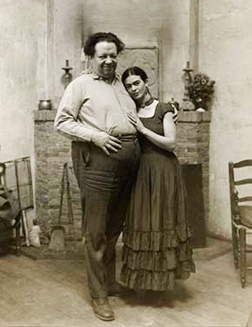

“I DON'T GIVE A SHIT WHAT
THE WORLD THINKS.
I WAS BORN A WHORE, I WAS BORN A PAINTER,
I WAS BORN SCREWED UP...
BUT I WAS HAPPY ON MY WAY...
YOU DON'T UNDERSTAND WHAT I AM...
I AM LOVE, I AM PLEASURE, I AM ESSENCE, I AM AN IDIOT, I AM AN ALCOHOLIC,
I AM TENACIOUS, I AM...
I SIMPLY AM...
KEEP YOUR FUCKING LIFE, YOU'RE A SHIT.”
FRIDA KAHLO TO DIEGO RIVERA
Magdalena Carmen Frida Kahlo Calderón was born on July 6, 1907 in Mexico City. When she was six she contracted poliomielitis, which caused her her right leg to be shorter. At 18 she was in a bus accident that left her with a dorsal spine injury. Because of having to be inmobile during the first months of recovery, she began to draw. That's how she met Diego Rivera.
They were a tempestuous pair, love and hate combined in a romance that had several break ups, but always saw them returning together. He was 22 years older than she, but that was no impediment to her falling in love at first sight. In 1929 they married when she was 20, he 42. Her family was strongly opposed, especially as he was an atheist and a Communist.
Infidelity on both sides was a constant presence in the marriage, although Diego seems to have been the most guilty party. Despite being ugly and fat – according to her – he was irresistable for most women. They divorced in 1940, only to remarry in 1941. Despite their many battles, the key to their marriage was not only love, physical passion and interest in politics. Diego and Frida admired and respected each other immensely as artists and human beings.
Toward the end of her life, Frida's health, always fragile, degenerated. In 1953, to avoid gangrene, her right leg was amputated below the knee. She died in the Casa Azul on July 13 1954.